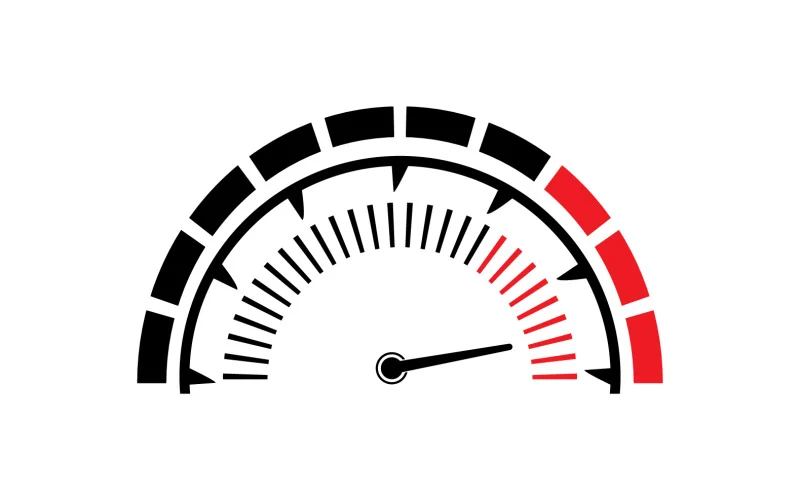

Bem-vindo ao Testes.com - Seu destino online para uma variedade de testes fascinantes e informativos! Aqui, você encontrará uma plataforma dedicada a fornecer uma experiência interativa e envolvente, onde é possível explorar diferentes testes e descobrir informações valiosas sobre diversos assuntos.
Teste a velocidade do seu carro: Nossa ferramenta de teste de velocidade do carro permite que você meça e acompanhe o desempenho do seu veículo. Obtenha dados precisos e saiba exatamente quão rápido você está acelerando, além de comparar os resultados com as especificações do fabricante. Descubra se seu carro está atingindo todo o seu potencial nas pistas!
Teste de nacionalidade: Curioso sobre a sua nacionalidade? Nosso teste de nacionalidade oferece uma oportunidade emocionante de explorar suas raízes, história e cultura. Responda a perguntas cuidadosamente elaboradas e descubra informações interessantes sobre sua origem étnica e conexões com diferentes países ao redor do mundo. Conheça mais sobre a sua identidade e entenda melhor a riqueza da diversidade cultural. Outros testes intrigantes: Não se limite apenas a um tipo de teste! Em Testes.com, você encontrará uma variedade de opções para satisfazer sua curiosidade e ampliar seu conhecimento. Teste sua inteligência emocional, sua habilidade de resolução de problemas, seu conhecimento geral e muito mais. Cada teste é projetado para ser desafiador, informativo e divertido!
Resultados detalhados e análise abrangente: Após a conclusão de cada teste, você receberá resultados detalhados e uma análise abrangente. Nossos relatórios fornecerão insights valiosos, destacando seus pontos fortes e áreas que podem ser aprimoradas. Aproveite essa oportunidade para crescer, aprender e se conhecer melhor. Participe da comunidade: Além dos testes individuais, você também pode se juntar à nossa comunidade ativa e interagir com pessoas que compartilham seus interesses. Compartilhe suas experiências, debata tópicos relacionados aos testes e faça novas amizades. Afinal, a jornada de aprendizado é ainda mais enriquecedora quando compartilhada com outras pessoas!
Explore o Testes.com hoje mesmo e mergulhe em um mundo de descobertas e aprendizado. Esteja você procurando testar a velocidade do seu carro, conhecer mais sobre sua nacionalidade ou simplesmente desafiar a si mesmo, nosso site oferece uma plataforma envolvente para você expandir seus horizontes. Vamos começar essa jornada emocionante juntos!